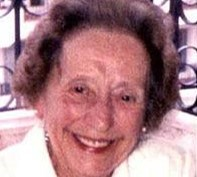

Case File: The Shipman Inquiry
Subject: Dr Harold Frederick Shipman
Case Overview:
Dr. Harold Frederick Shipman, a respected medical practitioner in Hyde, Manchester, is the prime suspect in a string of suspicious deaths. Investigation into his activities has revealed an alarming pattern of patient mortality rates well above the norm. This disturbing discovery has cast a shadow of doubt over Shipman's name.
Today, you will learn about the 15 murders he was convicted of and the method he used to kill hundreds more.
The victims

Name: Harold Frederick Shipman
Occupation: General Practicioner
Age: 57
Born: 14th Jan 1946
Nationality: British
Description:
Harold Frederick Shipman is a Caucasian male of average build and height, standing approximately 5'11" (180 cm) tall. Born on January 14, 1946, he would now be in his late 70s however, he committed suicide in prison at age 57 in 2004.
He was first hired as a GP in 1974 at Abraham Ormerod Medical Centre in Todmorden before opening his own surgery in Hyde at 21 Market Street.

Marie West
The prosecution says that Dr Shipman killed Mrs West, 81, at her home on 6 March, 1995, unaware that a friend was in the next room.
Jean Lilley
Dr Shipman called at Mrs Lilley's home on 25 April, 1997. A neighbour saw him leave and went to see her friend, but found her dead.

Marie Quinn
Dr Shipman is alleged to have injected her with morphine at her home on 24 November, 1997. He told her son that Mrs Quinn had phoned him saying she had had a stroke - and that she was dead by the time he arrived.

Norah Nuttall
The prosecution says Dr Shipman visited Mrs Nuttall at her home on 26 January, 1998. Her son returned to find his mother slumped in a chair.
Winifred Mellor
Mrs Mellor, 73, was found dead in her chair on 11 May, 1998, having been complaining of a sinus problem. Dr Shipman was reported to have visited her earlier in the day.

Irene Turner
Mrs Turner, 67, had a complicated medical history and had recently returned from holiday with a cold. The prosecution says Dr Shipman injected her with morphine at her home on 11 July, 1996.

Ivy Lomas
According to the prosecution, Dr Shipman killed Mrs Lomas, 63, at his surgery on 29 May, 1997 - then carried on seeing other patients before altering her medical records two days later.

Kathleen Wagstaff
The prosecution says Dr Shipman confused Mrs Wagstaff with another patient and called at the wrong house. After injecting the 81-year-old with morphine on 9 December, 1997, he is said to have put death down to heart disease.

Pamela Hillier
Mrs Hillier was an active 68-year-old who was stripping wallpaper the week before her death. She was found dead on 9 February, 1998, by paramedics who said the police should be told.

Joan Melia
Mrs Melia, 73, had visited Dr Shipman at his surgery on 12 June, 1998, suffering from a chest infection. He made a house call to her the same day and she was later found dead in her chair.

Lizzie Adams
The prosecution alleges that Dr Shipman killed the 77-year-old former dancing teacher at her home on 28 February, 1997.
Muriel Grimshaw
Mrs Grimshaw, 76, was found dead in her home on 14 July, 1997 by her daughter. Dr Shipman is said not to have examined the body but declared death to be from a stroke and hypertension.

Bianka Pomfret
Mrs Pomfret phoned Dr Shipman for a home visit on 10 December, 1997, and she was later found dead in her chair. Dr Shipman said she had heart trouble and had died of coronary thrombosis and ischaemic heart disease.
Maureen Ward
Miss Ward, 57, had been suffering from cancer but was not in ill-health at the time of her death on 18 February, 1998. Dr Shipman reported her death to the warden at the flats where she lived, saying the cause was a brain tumour.

Kathleen Grundy
The state says that Mrs Grundy was in good health and very active the day before her death on 24 June, 1998. She was visited by Dr Shipman early that morning for a blood sample and was later found dead, sitting on her settee.
>
NEXT
<